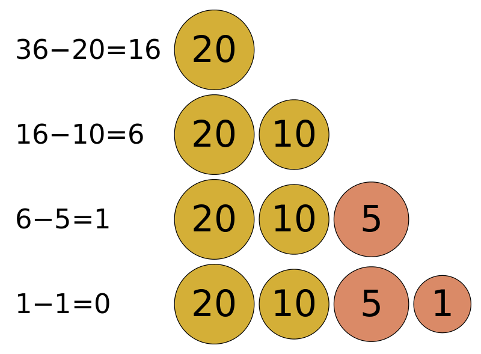

El algoritmo voraz de la moneda es una estrategia utilizada para dar cambio de una cantidad específica utilizando la menor cantidad posible de monedas disponibles. A diferencia de algunos enfoques más complejos, como la programación dinámica, el algoritmo voraz selecciona la moneda de mayor valor disponible en cada paso, con la esperanza de que esta elección resulte en la solución óptima global.
La idea principal detrás del algoritmo voraz es tomar decisiones localmente óptimas en cada paso, con la esperanza de que estas decisiones conducirán a una solución global óptima. En el contexto del cambio de moneda, esto significa seleccionar la moneda de mayor valor disponible que sea menor o igual al monto restante a devolver como cambio.
El algoritmo voraz de la moneda es relativamente simple de entender e implementar. Sin embargo, no siempre garantiza la solución óptima en todos los casos. Puede producir resultados subóptimos en situaciones donde una selección inicial de monedas de mayor valor no conduce a la solución óptima global.
Hay problemas que a pesar de tener un planteo sumamente sencillo, carecen de una solución que pueda ser considerada trivial. Imaginemos, por ejemplo, un viajante de comercio que debe recorrer 25 ciudades distribuidas por el interior de España: ¿de que forma debería hacerlo para completar su trabajo recorriendo el menor número de kilómetros posible? El problema seguramente es de interés para un gran número de empresas, se puede definir claramente en pocas palabras, pero su solución demandaría a un ordenador varios años de trabajo. Esto se debe a que la cantidad de recorridos posibles es de 25! (25 factorial, o sea, 1 x 2 x 3 x 4 x 5 x … x 24 x 25), es decir, hay 15.511.210.043.330.985.984.000.000 recorridos para probar y descartar antes de saber cual es el óptimo. Analizando mil millones de recorridos por segundo, demoraríamos 491.857.244 años en averiguar cuál es el recorrido óptimo para nuestro viajante. Esto sirve para darnos cuenta de la importancia que tiene un algoritmo rápido, aun cuando no siempre sea capaz de encontrar el mejor resultado posible. 
A continuacion se les presenta un ejemplo del funcionamiento del codigo.
El denominado “algoritmo voraz” sigue una estrategia sencilla pero eficaz. Simplemente, se trata de elegir la opción óptima en cada paso local, con la esperanza de llegar a una solución general óptima.
En el video esta un ejemplo de su funcionamiento, de como opera el codigo en su manera mas basica.